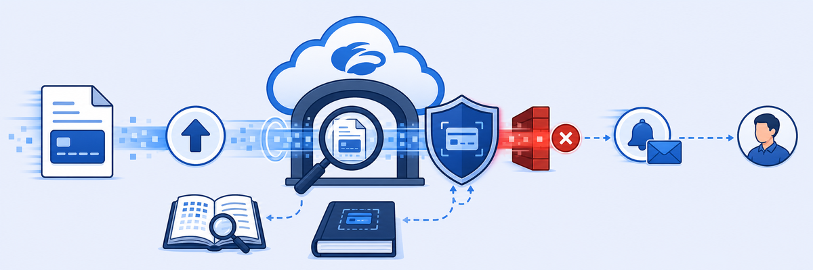

Lab 8: Enforce Policy with Unified DLP
LAB 8
Scenario: Sensitive data (credit card numbers) must not leave the organisation via web uploads. You'll build a DLP Engine from dictionary patterns, create a DLP Rule to block and notify, then test with a file upload containing synthetic sensitive data.

THINK FIRST · DATA LOSS PREVENTION
DLP in ZIA operates inline on HTTP/HTTPS traffic — it inspects file uploads, form posts, and web content for sensitive data patterns. For DLP to inspect encrypted traffic, SSL inspection must already be enabled.
- Why is SSL inspection a hard prerequisite for DLP to work on HTTPS traffic — and what does DLP see if SSL inspection is disabled?
- A DLP Engine defines what counts as sensitive data. A DLP Rule defines what to do when it's found. What's the consequence of creating a DLP rule without a properly configured engine — would it ever trigger?
- A user uploads a file containing credit card numbers to a personal cloud storage service. The DLP rule blocks the upload and shows a notification. What must be true about the user's network path for ZIA to have been able to intercept and inspect that upload?
Prerequisite: SSL Inspection must be enabled (Lab 5 Task 5.1). DLP cannot inspect encrypted HTTPS uploads without it.
Task 8.1 — Build DLP Engine, Rule, and Test
1 Confirm SSL Inspect All is active
- Navigate to Policies → SSL Inspection and verify the Inspect All Users rule is enabled and activated.
2 Create a DLP Engine
- Navigate to Policy → Data Loss Prevention → DLP Engines.
- Click the Engines tab, then click Add Custom DLP Engine.
- Set Name to
Sensitive Data. - Add a condition using the Credit Cards DLP dictionary with an appropriate match threshold.
- Click Save.
3 Create a DLP Rule
- Navigate to Data Loss Prevention → Rules.
- Click Add DLP Rule.
- Set Name to
Block Sensitive Data. - Set DLP Engine to Sensitive Data (the engine you just created).
- Set Action to Block.
- Enable Notify User and set a custom notification message.
- Click Save, then Activate.
4 Test with a sensitive file upload
- On the Corp: Client PC, navigate to
https://dlptoolbox.com. - Click File Audit and upload the Sensitive Data.txt file (provided in the lab materials).
- ZIA should intercept the upload and display a DLP block notification.
MENTAL NOTE
ZIA DLP requires two objects: (1) DLP Engine — defines what sensitive content looks like (dictionary patterns, thresholds); (2) DLP Rule — links the engine to an action (Block, Allow, Notify). SSL inspection must be enabled for DLP to inspect HTTPS uploads. Test path: DLP Toolbox File Audit → upload a file with matching patterns → expect a block notification if the engine + rule + SSL inspection chain is correctly configured.
ASK A QUESTION
ADD A NOTE